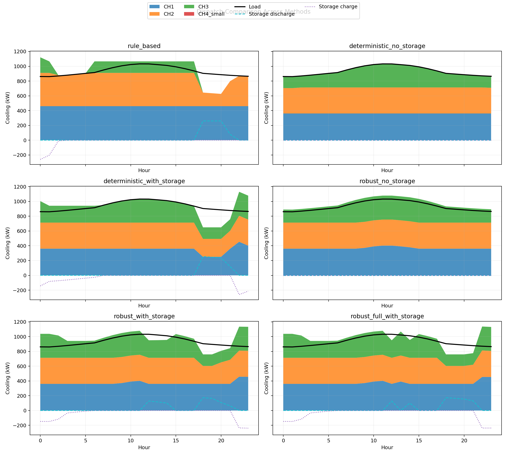
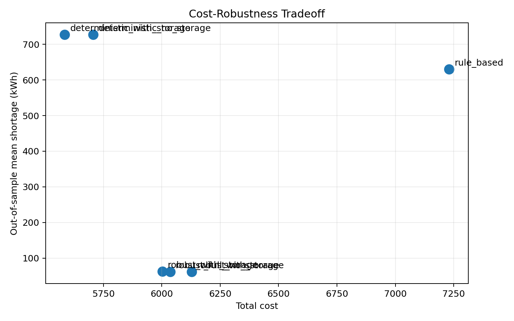
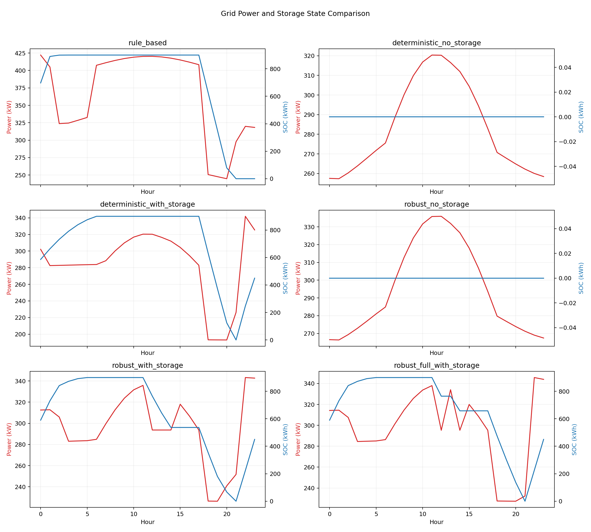
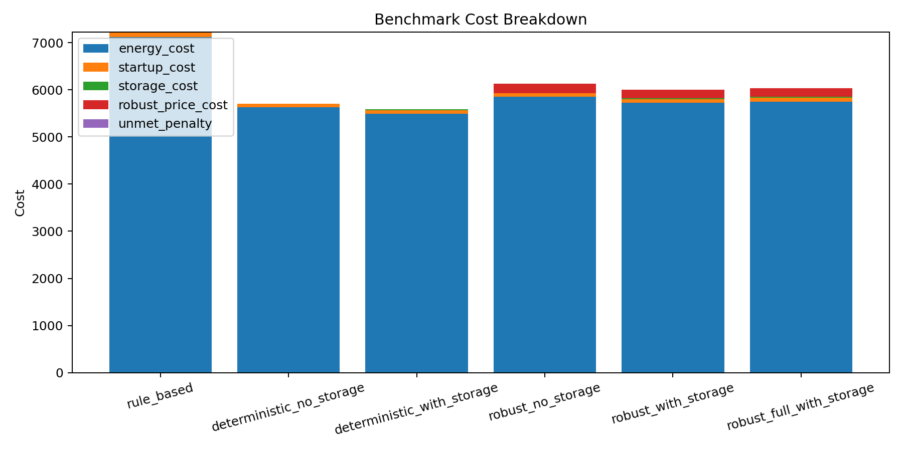
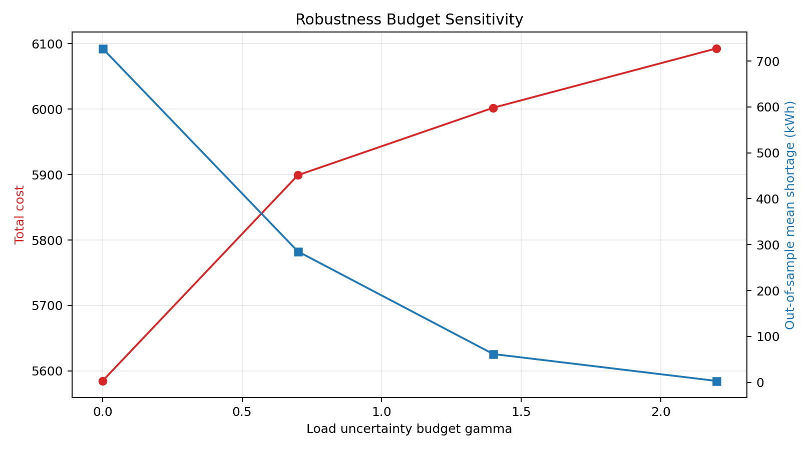
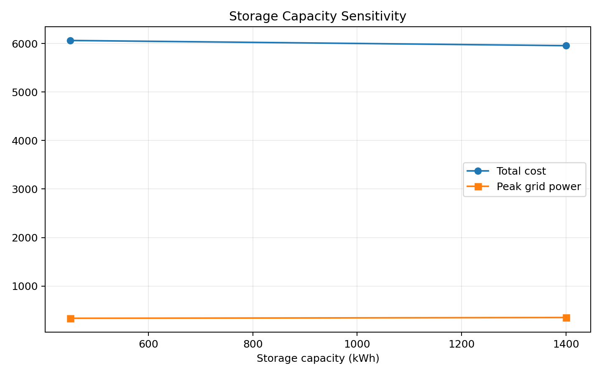
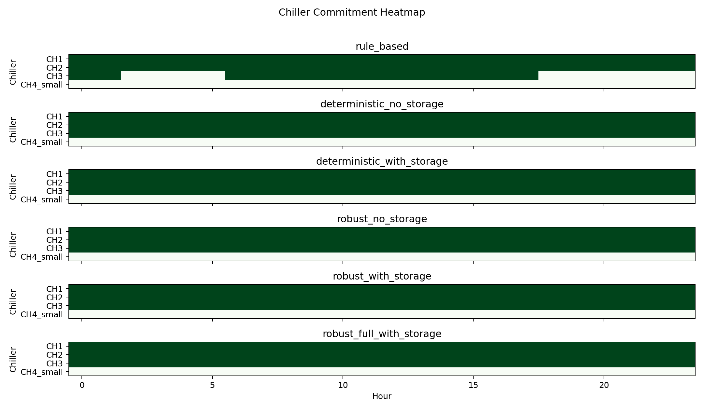

Abstract
Central chiller plants remain major electricity consumers in continuously operated facilities, yet much of the recent literature emphasizes simulator-specific tuning or model predictive control rather than a transparent planning-oriented optimization scaffold. This paper develops a reproducible day-ahead Pyomo mixed-integer linear programming framework for a heterogeneous multi-chiller plant with chilled-water storage, chilled-water pumps, condenser-water pumps, and cooling-tower auxiliaries. Beyond unit commitment, piecewise-linear efficiency curves, and storage dynamics, the formulation explicitly robustifies three uncertainty channels: cooling load, electricity price, and wet-bulb-driven efficiency and capacity degradation. Relative to the lowest-cost deterministic schedule with storage, the proposed ambient-aware robust schedule increases nominal operating cost from 5584.7 to 6035.6 while reducing the out-of-sample mean cooling shortfall from 727.4 kWh to 61.7 kWh and the correlated-stress mean shortfall from 651.1 kWh to 35.4 kWh. Relative to a load-and-price-robust schedule with storage, the ambient-aware extension further lowers correlated-stress shortage from 36.8 to 35.4 kWh and correlated out-of-sample energy cost from 6052.6 to 6049.6. We position the study as a reproducible ambient-aware full-plant benchmark rather than a field-validated deployment study.
1. Introduction
Central cooling plants and multi-chiller systems remain among the most electricity-intensive assets in large commercial, industrial, and mission-critical facilities. Their operation is complicated by heterogeneous chiller efficiencies, auxiliary pumping and heat-rejection loads, time-varying tariffs, uncertain cooling demand, and hot-weather performance deterioration. In practice, many sites still rely on rule-based sequencing or simulator-assisted retuning, which often leaves non-trivial system-level savings unrealized.
Recent work has shown that calibrated simulation models and advanced control can substantially improve plant efficiency. Model-based global optimization can extract savings from existing control architectures without major retrofits [Niu et al., 2023], Modelica-based studies have clarified the interaction between sequencing and parameter tuning [Bai et al., 2024], and predictive-control studies in campuses, airports, and data centers demonstrate the value of coordinating chillers and storage [Campos et al., 2021; Zhu et al., 2023; Zhao et al., 2024; Chinde and Woldekidan, 2024]. However, these streams of work often emphasize one axis at a time: high-fidelity simulation, online MPC, or robust scheduling under limited plant scope.
This paper focuses on a narrower but practically motivated problem: day-ahead scheduling of a heterogeneous multi-chiller plant under coupled load, price, and ambient uncertainty. Rather than proposing a full MPC stack, we develop a reproducible Pyomo-based mixed-integer linear programming (MILP) framework that captures unit commitment, auxiliary-equipment coupling, storage operation, and budgeted robustness in a single optimization layer. The intended use case is benchmark-oriented planning and what-if analysis before moving toward plant-specific validation or online supervisory control.
- A full-plant day-ahead scheduling MILP for chillers, chilled-water pumps, condenser-water pumps, cooling-tower auxiliaries, and chilled-water storage using explicit mixed-integer unit commitment and piecewise-linear performance models.
- An ambient-aware robust extension that protects against wet-bulb-driven efficiency degradation and available-capacity derating while remaining MILP-solvable in Pyomo.
- A semi-synthetic benchmark and experiment pipeline that compare rule-based, deterministic, partially robust, and fully ambient-aware robust scheduling, together with ablations on uncertainty budget, storage capacity, weather robustness, equipment heterogeneity, and auxiliary-equipment modeling.
The empirical results show a clear and interpretable tradeoff. The deterministic MILP with storage is the cheapest nominally, but it is brittle under sampled disturbances. The ambient-aware robust formulation incurs a moderate cost premium while sharply reducing both standard out-of-sample shortage and correlated weather-linked stress metrics. We therefore present the framework as a reproducible benchmark methodology rather than as a fully validated operational controller.
3. System Model and Ambient-Aware Robust MILP Formulation
Plant scope
We consider a centralized cooling plant with a finite scheduling horizon T = {1, ..., 24}, a chiller set C, a chilled-water storage tank, chilled-water pumps, condenser-water pumps, and cooling-tower auxiliaries. The benchmark case contains three large chillers and one small chiller with heterogeneous capacities, minimum part-load ratios, startup costs, and piecewise-linear efficiency segments.
At each hour, the optimization decides whether each chiller is on, whether it starts up, its cooling output, storage charging and discharging power, and the normalized operating levels of auxiliary equipment. The model is intentionally day-ahead rather than receding-horizon: all hourly decisions are optimized jointly using nominal forecasts and bounded uncertainty sets. To keep the benchmark compact and MILP-solvable, the base formulation does not include minimum up/down time, ramp-rate, or detailed hydraulic state constraints.
Chiller commitment and piecewise-linear cooling production
For each chiller c, let u(c,t) denote the on/off state, v(c,t) the startup variable, and q(c,t) the delivered cooling power. The delivered cooling is decomposed into a minimum output term plus segment-wise incremental production:
The electrical power draw of each chiller is modeled as fixed parasitic power plus segment-dependent inverse-COP slopes. In the implementation, these slopes are adjusted by wet-bulb temperature through a simple multiplicative sensitivity term, so the benchmark retains environmental coupling without introducing nonlinearities.
Startup logic is encoded through the standard commitment inequality v(c,t) ≥ u(c,t) - u(c,t-1), with the first hour initialized from an all-off state.
Storage and auxiliary equipment
Let xch(t), xdis(t), and SOC(t) denote storage charging power, discharging power, and state of charge. The storage state evolves according to charging and discharging efficiencies, subject to power limits, energy capacity, and a cyclic end condition.
The total cooling supplied to the load is the sum of chiller output and storage discharge minus storage charge:
Auxiliary-equipment power is modeled by normalized operating levels for chilled-water flow, condenser-water flow, and cooling-tower activity. These levels are lower bounded by affine functions of aggregate chiller load and the number of active chillers, so the benchmark captures the practical fact that optimizing chillers alone can materially understate plant electricity use.
Budgeted robust cooling adequacy
The uncertain cooling load is decomposed into components l with nominal values d-hat(l,t) and deviations d-tilde(l,t). To protect against simultaneous adverse deviations without assuming that every component reaches its worst case at every hour, we use a budgeted uncertainty set. Its linear robust counterpart is:
Here y(t) is an unmet-cooling slack variable penalized heavily in the objective. This is a Bertsimas-Sim-style reformulation: Γload controls how many deviations are allowed to be simultaneously active in an adversarial sense.
Ambient-aware robustification
The key extension beyond the earlier draft is that the scheduler also protects against wet-bulb-driven performance deterioration. Hot and humid conditions raise inverse-COP slopes, increase cooling-tower effort, and can slightly erode the usable cooling capacity of each chiller. In the ambient-aware robust model, these effects are represented with conservative linear surrogates evaluated at nominal wet-bulb plus its hourly deviation bound, so the optimization remains in the MILP regime.
During evaluation, realized chiller power and realized available cooling are recomputed under the sampled wet-bulb trajectory instead of being frozen at nominal conditions. This makes the stress test more physically meaningful and differentiates the proposed formulation from a load-and-price-only robust scheduler.
Robust electricity cost and objective
Let π-hat(t) denote the nominal tariff and π-tilde(t) its deviation bound. If pgrid(t) is the plant grid power, the nominal energy cost is Σ π-hat(t) pgrid(t). We augment it with another budgeted robust term:
The final MILP minimizes nominal energy cost, startup cost, storage throughput cost, unmet-cooling penalty, and the robust tariff premium. In the benchmark code, the unmet-cooling penalty is set to 100 per kWh, the default uncertainty budgets are Γload = 1.4 and Γprice = 5.0, the initial storage state is 450 kWh, and out-of-sample evaluation uses 24 sampled disturbance realizations. The default solver backend is HiGHS.
4. Experiments
Benchmark setup
The benchmark plant contains three large chillers and one small chiller, a single chilled-water storage tank, normalized chilled-water and condenser-water pumping loads, and cooling-tower auxiliary power. The scheduling horizon is 24 hours with hourly resolution. The cooling load is constructed semi-synthetically from three components: a base internal load, an ambient-sensitive component, and a process-variation component. Electricity tariffs follow a time-of-use structure with higher prices during afternoon and evening hours.
We compare six benchmark methods:
- Rule-based: a heuristic merit-order sequencing policy with simple tariff-triggered storage charging and discharging.
- Deterministic MILP without storage: nominal day-ahead optimization with auxiliary-equipment modeling but no robustness terms and no storage use.
- Deterministic MILP with storage: nominal day-ahead optimization that isolates the value of storage without robustness.
- Robust MILP without storage: load-and-price-robust scheduling without storage.
- Robust MILP with storage: load-and-price-robust scheduling with storage but nominal ambient coefficients.
- Ambient-aware robust MILP with storage: the full proposed formulation, which additionally protects against wet-bulb-driven efficiency degradation and available-capacity derating.
Robustness is evaluated with out-of-sample perturbations that sample each load component, tariff, and wet-bulb trajectory within its bounded uncertainty interval. We report mean cooling shortfall, upper-tail shortfall statistics, realized energy cost, and a correlated-stress setting in which the ambient-sensitive load and wet-bulb conditions share a common adverse weather driver.
Main comparative results
The deterministic MILPs deliver the lowest nominal operating cost, with the storage-enabled deterministic schedule achieving the best nominal objective at 5584.7. However, both deterministic schedules perform poorly under uncertainty, with an out-of-sample mean shortfall of 727.4 kWh and a correlated-stress mean shortfall of 651.1 kWh. By contrast, the robust formulations sharply reduce these shortage metrics. The ambient-aware robust formulation increases nominal cost to 6035.6, but lowers the out-of-sample mean shortfall to 61.7 kWh and the correlated-stress mean shortfall to 35.4 kWh.
| Method | Total Cost | Peak Power | Avg. COP | OOS Shortage | Corr. Shortage |
|---|---|---|---|---|---|
| Rule-based | 7230.2 | 422.1 | 2.655 | 630.2 | 585.5 |
| Deterministic no storage | 5706.4 | 320.4 | 3.296 | 727.4 | 651.1 |
| Deterministic with storage | 5584.7 | 341.9 | 3.279 | 727.4 | 651.1 |
| Robust no storage | 6128.2 | 335.9 | 3.290 | 61.7 | 35.4 |
| Robust with storage | 6002.1 | 343.2 | 3.277 | 62.3 | 36.8 |
| Ambient-aware robust with storage | 6035.6 | 345.7 | 3.258 | 61.7 | 35.4 |

The cost-robustness tradeoff is explicit. Moving from deterministic MILP to robust MILP requires a moderate increase in total cost, but it substantially improves out-of-sample cooling adequacy. The ambient-aware robust point stays close to the load-and-price-robust point in nominal cost while shifting toward lower shortage under weather-linked stress.

Storage and ambient-robust interpretation
The robust-with-storage solution does not minimize peak grid power in this benchmark, because it opportunistically charges during lower-price hours to protect future adequacy. The value of storage here is therefore not merely peak shaving; it also acts as a flexibility buffer that lowers total cost under robust planning constraints.

The cost decomposition further clarifies the mechanism. Relative to the rule-based baseline, optimization reduces nominal energy cost substantially. Relative to deterministic scheduling, robust scheduling introduces a tariff-risk premium and more conservative dispatch decisions, but these are partially offset by storage-enabled temporal shifting. The ambient-aware variant adds one more layer of conservatism by internalizing hot-wet weather penalties in both chiller efficiency and available capacity. In return, its correlated realized energy cost drops from 6052.6 to 6049.6 relative to the nominal-ambient robust schedule.

Ablation studies
Increasing the robustness budget Γload from 0.0 to 2.2 raises total cost from 5584.7 to 6092.8, but it drives the out-of-sample mean shortage down from 727.4 kWh to 3.5 kWh. This monotonic trend indicates that the uncertainty-budget parameter is interpretable and operationally tunable.

Storage sizing yields a different pattern. Increasing storage capacity from 450 kWh to 1400 kWh reduces total cost from 6062.0 to 5955.2, while slightly lowering the equivalent cycling ratio. This suggests that larger storage improves dispatch flexibility before cycling saturation becomes a dominant constraint.

Two additional ablations are also informative. First, forcing identical chiller efficiency assumptions degrades average COP and increases total cost, indicating that equipment heterogeneity is not a cosmetic modeling detail. Second, removing pump and tower power terms makes the plant appear artificially efficient. Third, the dedicated weather-robustness ablation shows that ambient-aware derating and efficiency protection produce a modest but consistent improvement under correlated weather-linked stress. For completeness, the optimization runs quickly in this benchmark: solve times are around 0.09 to 0.15 seconds on the current machine.
Discussion
The results support four conclusions. First, deterministic plant scheduling can be misleadingly optimistic when the control objective includes reliable cooling adequacy under uncertainty. Second, storage has planning value beyond straightforward arbitrage because it gives the robust scheduler another degree of freedom for adequacy preservation. Third, heterogeneous chillers and auxiliary-equipment coupling materially affect dispatch quality. Fourth, weather-aware performance degradation is worth modeling explicitly if the benchmark is intended to say something about realistic plant robustness.
At the same time, this study is intentionally limited. The benchmark is semi-synthetic rather than calibrated to field data, the uncertainty set is interval-based rather than distributionally robust, and the model uses affine auxiliary-equipment and ambient-derating surrogates instead of detailed hydraulics and heat-rejection physics. The comparison set also does not yet include a scenario-based stochastic scheduler or a rolling-horizon MPC implementation, so the current evidence should be interpreted as a benchmark study rather than a definitive ranking across all uncertainty-aware methods.
5. Conclusion
This paper presented a reproducible Pyomo-based ambient-aware robust MILP framework for day-ahead scheduling of a heterogeneous multi-chiller plant with thermal storage and auxiliary equipment. The formulation combines unit commitment, piecewise-linear chiller performance, storage dynamics, budgeted robustness for cooling load and electricity price, and a compact wet-bulb-aware treatment of efficiency degradation and available-capacity derating.
On the semi-synthetic 24-hour benchmark, the deterministic MILP with storage achieved the lowest nominal cost but was highly vulnerable to out-of-sample disturbances. The robust formulations sharply reduced expected shortage, and storage partially recovered the associated cost premium. The ambient-aware extension then provided an additional layer of protection under weather-linked stress with only a small increase in nominal cost. These findings support the use of ambient-aware planning-oriented scheduling as a benchmark methodology for full-plant cooling optimization.
The current study has four main limitations. First, the experiments are based on semi-synthetic demand, tariff, and weather profiles rather than measured plant data. Second, the auxiliary-equipment and ambient-derating models are intentionally compact and may omit richer hydraulic and thermodynamic effects. Third, the work addresses day-ahead scheduling only and does not yet include rolling-horizon feedback or zone-level thermal dynamics. Fourth, the uncertainty model is budgeted and interval-based rather than scenario-driven or distributionally robust.
Future work should therefore proceed along three complementary directions: field-calibrated validation on a measured chiller plant, richer ambient and hydraulic surrogate models that remain optimization-friendly, and tighter integration between robust day-ahead scheduling and real-time supervisory control. Even in its current form, however, the proposed framework provides a transparent and extensible baseline for ambient-aware robust cooling-plant optimization studies.
Appendix
Benchmark plant parameters
| Item | Value |
|---|---|
| Chiller capacities | 460, 450, 390, 190 kW |
| Minimum part-load ratios | 0.35, 0.35, 0.40, 0.30 |
| Startup costs | 28, 28, 22, 11 |
| Fixed parasitic powers | 24, 24, 20, 8 kW |
| Segment widths | {90,110,99}, {85,110,97.5}, {72,96,66}, {36,46,51} kW |
| Base segment COPs | {6.35,6.10,5.55}, {6.25,6.05,5.50}, {5.90,5.70,5.20}, {5.75,5.55,5.15} |
| Wet-bulb efficiency sensitivities | 0.015, 0.015, 0.017, 0.018 |
| Wet-bulb capacity derating coefficients | 0.010, 0.010, 0.012, 0.013 |
| Storage capacity | 900 kWh |
| Storage charge/discharge limit | 260 kW |
| Storage efficiencies | 0.95 / 0.95 |
| Initial SOC | 450 kWh |
| Load robustness budget | 1.4 |
| Price robustness budget | 5.0 |
| Wet-bulb deviation range | 0.8-1.0 C by hour |
| Unmet-cooling penalty | 100 per kWh |
| OOS sample count | 24 |
| Default solver | HiGHS |
Implementation notes
The optimization is implemented in Pyomo and currently solved with a generic MILP backend. The codebase includes a semi-synthetic benchmark generator, deterministic and robust MILP model builders, a rule-based baseline, experiment scripts for benchmark and ablation studies, and automated export of CSV summaries and figure galleries.
The benchmark outputs used in this draft were produced from the same repository and are therefore directly reproducible from the accompanying experiment scripts.
Omitted operational constraints
The current benchmark does not impose minimum up/down times, ramp-rate limits, or detailed hydraulic state equations. The ambient-aware extension also uses compact conservative derating surrogates rather than a full heat-rejection model. These omissions were intentional to keep the first formulation compact and to isolate the effect of uncertainty-aware scheduling. In a plant-specific deployment study, these constraints should be reinstated and calibrated to equipment specifications.
Extended visual diagnostics
In addition to the main-paper figures, the repository exports commitment heatmaps, per-method cooling-balance plots, power-tariff overlays, storage trajectories, and weather-robustness ablation charts. These diagnostics are useful when inspecting how robustness budgets alter the timing of commitment and how ambient-aware robustness changes the use of storage and chiller headroom.

References
- Bai, X., Tang, Q., Luo, J., Mao, Y., Liang, C., and Zhang, X. Optimizing energy efficiency in multi-chiller systems: A comprehensive Modelica-based approach. Journal of Building Engineering, 95:110087, 2024.
- Fu, Y., Zuo, W., Wetter, M., VanGilder, J. W., Han, X., and Plamondon, D. Equation-based object-oriented modeling and simulation for data center cooling: A case study. Energy and Buildings, 186:108-125, 2019.
- Campos, G., Liu, Y., Schmidt, D., Yonkoski, J., Colvin, D., et al. Optimal real-time dispatching of chillers and thermal storage tank in a university campus central plant. Applied Energy, 2021.
- Chinde, V. and Woldekidan, K. Model predictive control for optimal dispatch of chillers and thermal energy storage tank in airports. Energy and Buildings, 2024.
- Kong, D., Reffat, R., Chen, Z., Yang, Z., Ma, H., Du, D., and Zhang, Z. Decoupled step-wise simulation-based energy-efficient control for industrial space cooling: Practical validation in a large-scale manufacturing plant. Building Simulation, 2025.
- Lin, X., Shan, K., and Wang, S. Model predictive control of large chiller plants for enhanced energy efficiency utilizing inherent cold storage of cooling systems. Journal of Energy Storage, 2025.
- Niu, J., Zhou, R., Tian, Z., Zhu, J., Lu, Y., and Ma, J. Energy-saving potential analysis for a 24-hour operating chiller plant using the model-based global optimization method. Journal of Building Engineering, 69:106213, 2023.
- Sadat-Mohammadi, M., Asadi, S., Habibnezhad, M., et al. Robust scheduling of multi-chiller system with chilled-water storage under hourly electricity pricing. Energy and Buildings, 2020.
- Saeedi, M., Moradi, M., Hosseini, M., Emamifar, A., et al. Robust optimization based optimal chiller loading under cooling demand uncertainty. Applied Thermal Engineering, 2019.
- Zhao, J., Chen, Z., Li, H., and Liu, D. A model predictive control for a multi-chiller system in data center considering whole system energy conservation. Energy and Buildings, 324:114919, 2024.
- Zhu, Y., Zhang, Q., Zeng, L., Wang, J., Zou, S., and Zheng, H. An advanced control strategy for optimizing the operation state of chillers with cold storage technology in data center. Energy and Buildings, 301:113684, 2023.